The quiz editor is accessible to instructors or other privileged users for creating, editing, and deleting quizzes. In spirit of automated feedback, CSTutor only supports multiple choice, true or false, or code snippet questions. However, the instructor may wish to create several versions of the quiz in order to avoid repeat questions.
The instructor is also able to set and edit properties of the quiz, such as prerequisites. With prerequisites, the instructor can identiy which quizzes must be completed before being able to take the quiz. In some instances, an instructor may wish to make all quizs available immediatly in order to demonstrate knowledge in the subject without needing to go through the lessons. In other instances, an instructor may wish to unlock quizs and make them visible as previous quizzes are completed in order to create a flow for the course material. If a quiz is failed, the instructor may wish to have the student take a different version of the quiz so the student doesnt answer the same questions.
Another feature of the quiz editor is the capabilities to use paths. With quiz paths, the instructor can direct the student to a particular lesson based on the students score. For example, if a student scores below 60%, the student may be required to retake the lesson. If the student scores between 61% and 75%, the student could be encouraged to review the material before moving forward. If the student scores between 76% and 100%, the student may be automatically directed to the next lesson in the series.
To create a quiz, the instructor presses the 'Create Quiz' button. In response, the system generates a blank quiz as shown in Figure 2.3.2.1-1.
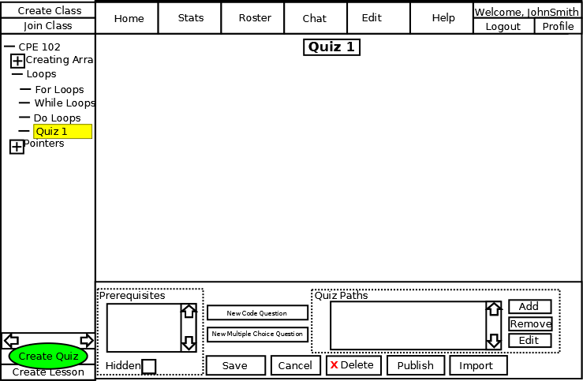
Figure 2.3.2.1-1: Creating a quiz.
The figure shows the result of the blank quiz after having hit the 'Create Quiz' button.
After having created a blank quiz question, the instructor can then title the quiz. To do this, the instructor clicks into the text box showing 'Quiz 1' and enters in the desired name. This name is a standard string.
To add a multiple choice question, the instructor hits the 'New Multiple Choice Question' button. In response, the system generates a blank question as shown in Figure 2.3.2.2-1.
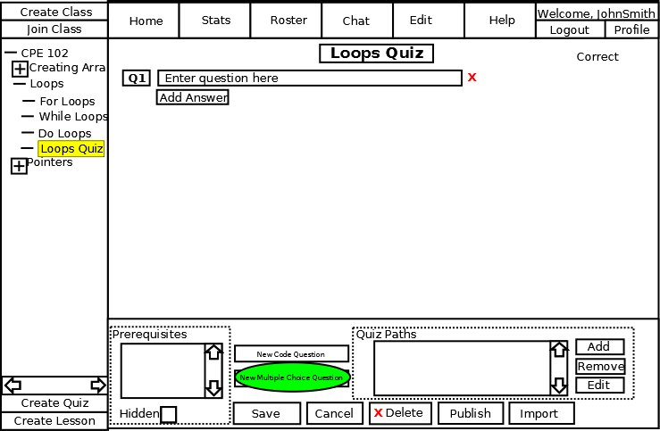
Figure 2.3.2.2-1: Adding a Multiple Choice Question.
The figure shows the result of the blank quiz after having hit the 'Add New Multiple Choice Question' button. The added elements are strings for the question title and the question. There is also a button below the question for adding a possible answer.
After having created a blank question, the instructor can than edit the question title or prompt. To do this, the user must click into the text box showing 'Enter Question Here' and replace it with the question being asked. After typing in the question, the instructor then needs to provide options for the answers to the multiple choice question. To add a possible answer, the user must hit the 'Add New Answer' button as shown in Figure 2.3.2.2-2.
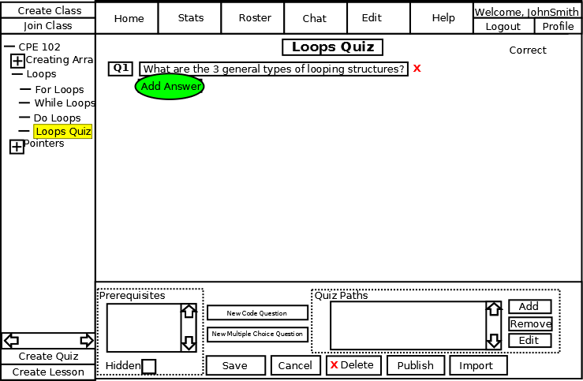
Figure 2.3.2.2-2: Adding an Answer.
The system will then generate a blank answer. This includes an text field for the answer, as well as a radio button indicating if this answer is the correct answer or not. This is shown in Figure 2.3.2.2-3.
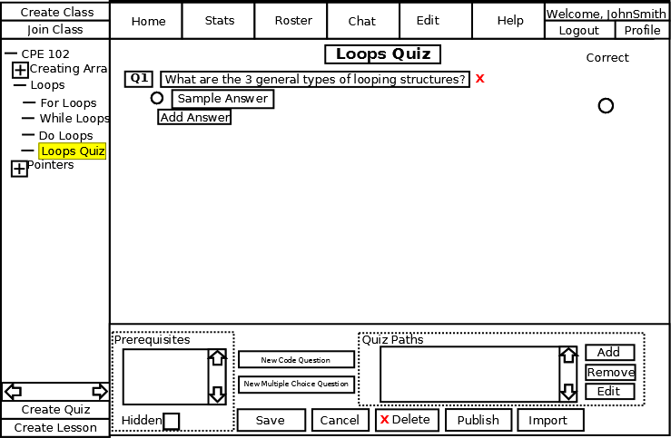
Figure 2.3.2.2-3: Blank Answer.
After adding a blank answer, the instructor then needs to fill in the text for the answer. To do this, the user must click into the text field reading 'Sample Answer' and replace it with the neccessary text. The final step in adding a question is to identify the correct answer. This is done by selecting the radio button next to the correct answer. The result of the instructor adding a multiple choice question with 4 different possible answers is shown in figure 2.3.2.2-4.
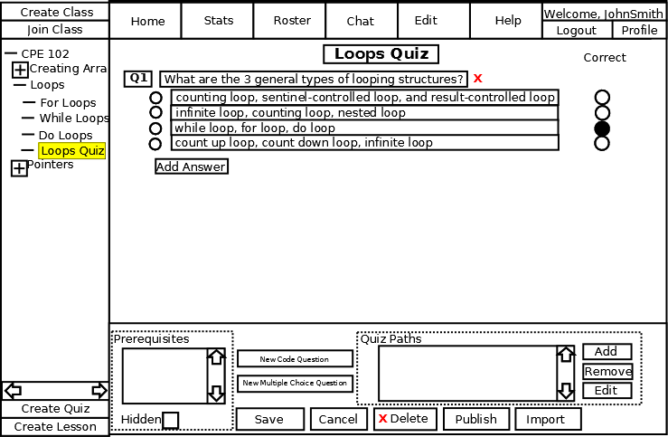
Figure 2.3.2.2-4: Comepleted Multiple Choice Question.
To add a code question, the instructor hits the 'New Code Question' button shown in Figure 2.3.2.3-1.
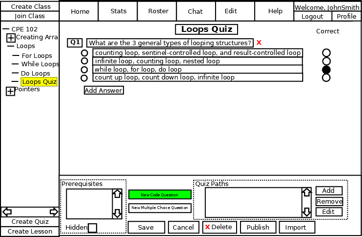
Figure 2.3.2.3-1: Add Code Question button.
In response to pressing the button, the system will popup a dialog box as shown in Figure 2.3.2.3-2
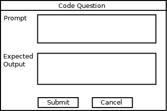
Figure 2.3.2.3-2: New code question dialog.
The figure shows the dialog box displayed after having hit the 'Add New Code Question' button. The dialog contains two string fields, one for the prompt and one for the expected output. Both fields are regular strings. Figure 2.3.2.3-3 shows this dialog box after having been filled in.
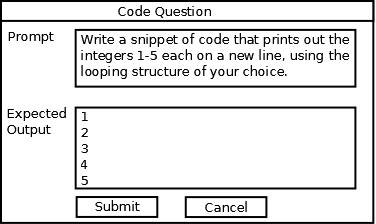
Figure 2.3.2.3-3: Completed Add Code Question dialog.
The system will then generate the code question with the given prompt and expected output. It will be added to the quiz as shown in Figure 2.3.2.3-4.
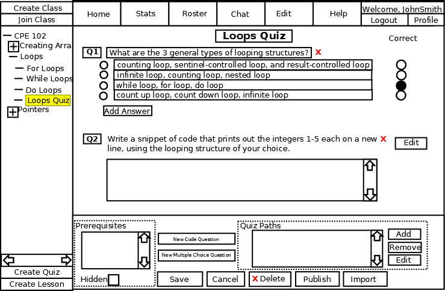
Figure 2.3.2.3-4: Completed Code Question.
To remove a question, the instructor must hit the 'X' button next to the question being deleted.
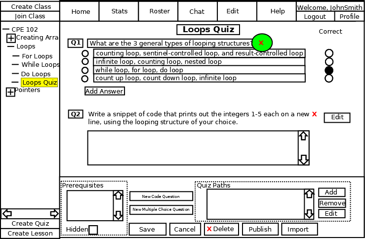
Figure 2.3.2.4-1: Delete Question button.
In response, the system will display a dialog confirming the deletion of the question as shown in Figure 2.3.2.4-2.
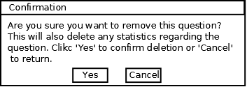
Figure 2.3.2.4-2: Question Deletion Confirmation.
To confirm deleting the question, the instructor must select the 'Yes' button. To cancel the question deletion, the instructor can select the 'No' button.
To delete a quiz, the instructor must hit the 'Delete' button as shown in Figure 2.3.2.5-1.
Figure 2.3.2.5-1: Quiz Deletion Button.
In response, the system will display a dialog confirming the deletion of the quiz as shown in Figure 2.3.2.5-2.
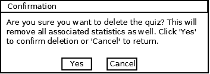
Figure 2.3.2.5-2: Quiz Deletion Confirmation.
To confirm deleting the quiz, the instructor must select the 'Yes' button. To leave the quiz, the instructor must select the 'No' button and no deletion will be made. Once a quiz is deleted, all associated student statistics are also removed. This operation cannot be undone.
To direct the student to different sections of CSTutor based on their result from the quiz, the user can specify an unlimited number of quiz paths by editing the 'Quiz Paths' fields as shown in Figure 2.3.2.6-1. In response, the system directs the student to the specified lesson after submitting the quiz and receiving their grade.
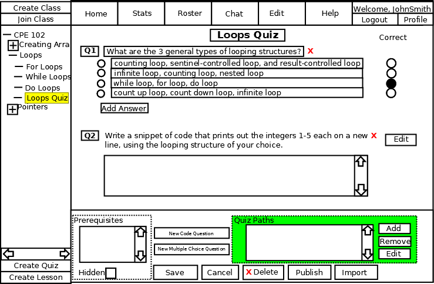
Figure 2.3.2.6-1: Quiz Paths.
In this section the instructor can add, remove, or edit existing quiz path using the 'Add', 'Remove', or 'Edit' buttons respecitvly. To add a quiz path, the user must hit the 'Add' button. In response, the system will display the Quiz Path dialog as shown in Figure 2.3.2.6-2
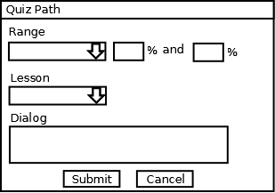
Figure 2.3.2.6-2: Quiz Path Prompt.
The dialog shown in Figure 2.3.2.6-2 contains a dropdown box containing the mathemetical symbols '<', '<=', '>', '>=', '=', and 'Between'. When a symbol is selected, a text field will become enabled for the instructor to enter the percentage(s) used to specify the range. These percentages must be whole numbers between 0 and 100. The dialog also contains a dropdown box listing all lessons. When a user completes a quiz within the specified grade threshold, the user will then be taken to the page selected from the dropdown. The final element in the dialog is an optional dialog string. This dialog will be displayed to the student. If no dialog is entered, nothing will be displayed. A completed Quiz Path dialog is shown in Figure 2.3.2.6-3.
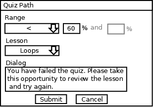
Figure 2.3.2.6-3: Completed Quiz Path dialog.
In the following sample, the instructor has created three quiz paths. If the student scores below 60% he is met with a dialogue explaining that he needs to retake the lesson, and is brought back to the beginning of the lesson. If he scores between a 60% and 74%, he is not directed anywhere and is prompted that he is encouraged to retake the lesson but will not be forced to retake it. Finally, if the student scores 75% or above, he is not given a dialogue and is brought to the next lesson.
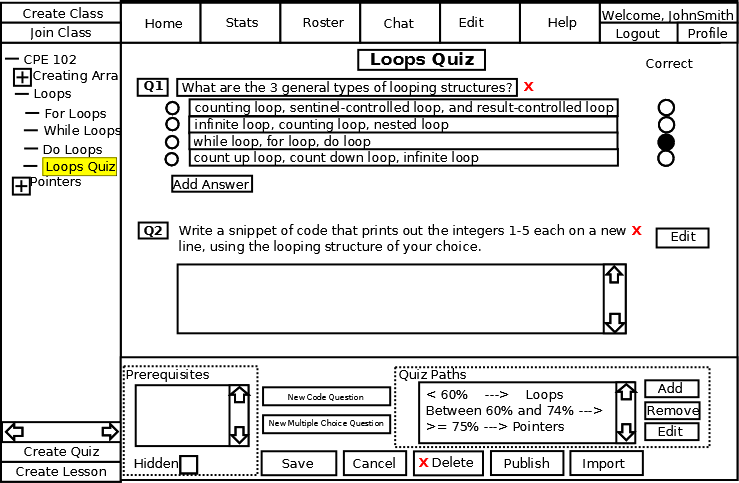
Figure 2.3.2.6-4: Completed Quiz Paths Example.
To require a quiz or multiple quizzes as a prerequisite, the instructor must select the desired quizzes from the scroll box labelled 'Prerequisite'. This scroll box is shown in Figure 2.3.2.7-1.
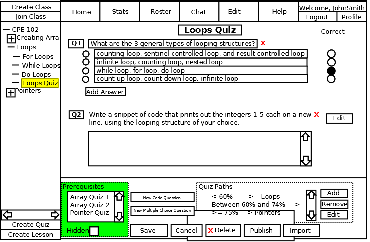
Figure 2.3.2.7-1: Prerequisite Scroll Box.
The instructor then selects the appropriate quiz to require as a prerequsite, if desired, by highlighting it in the scroll box. The instructor can select multiple quizzes as prerequisites by holding down the 'Ctrl' key on their keyboard while clicking. A completed prerequisite section is shown in Figure 2.3.2.7-2
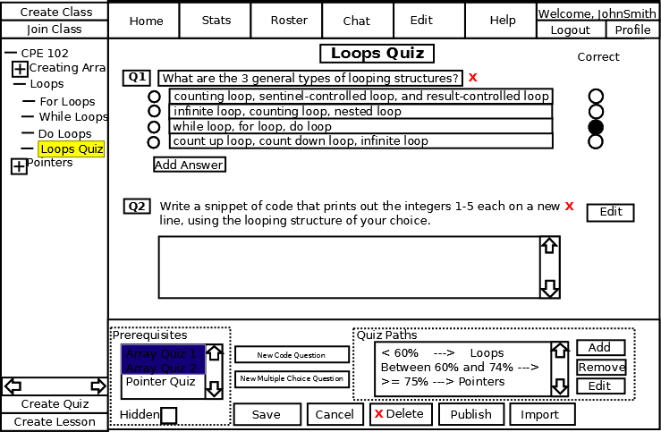
Figure 2.3.2.7-1: Prerequisite Example.
In this example, the instructor has selected 'Array Quiz 1' and 'Array Quiz 2' as prerequisites. 'Pointers Quiz' was not selected as a prerequisite.
To make the quiz hidden to students until they have successfully completed all prerequisites, the instructor can check the 'Hidden' box. In response the system makes the quiz unreachable by any student until all prerequisites have been satisfied. If prerequisites have been set, as described here, but the instructor chooses not to hide the quiz, the quiz and its questions will be viewable by students, but students can not submit answers until all prerequisites have been met.
To create different versions of a quiz, the instructor can push the 'Create Quiz' button while having the quiz selected that is desired to be versioned. In response, the system will create a quiz that will be treated as a version for the currently selected quiz. On each attempt of a quiz, the system will use a round-robib rotation schedule of selecting from the versions for the given quiz. All of the options for the quiz will be disabled and are inherited from the parent quiz. Quiz versions show up as children of another quiz, as shown in Figure 2.3.2.9-1
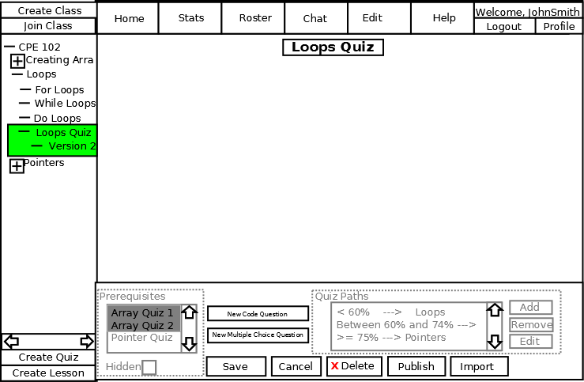
Figure 2.3.2.9-1: Quiz Versioning.
After creating a quiz, the instructor can save and/or publish the changes using the buttons shown in Figure 2.3.2.10-1.
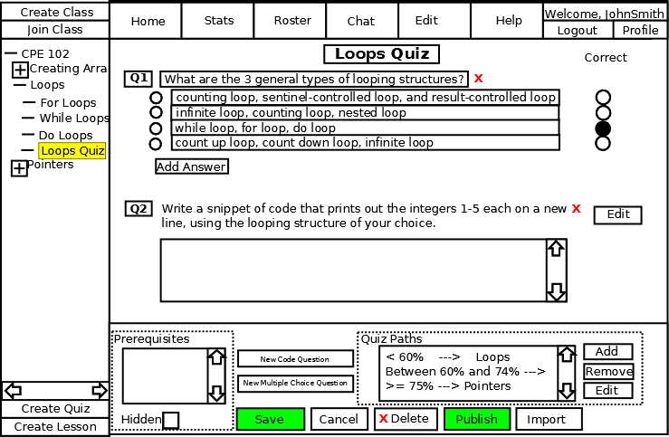
Figure 2.3.2.10-1: Save and Publish Buttons.
The 'Save' button will save the changes to the server's working copy of the quiz. This copy is not the live version that students see. The 'Publish' button saves the quiz as the live version of the quiz.